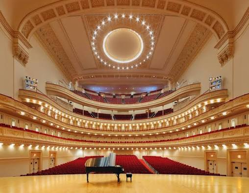
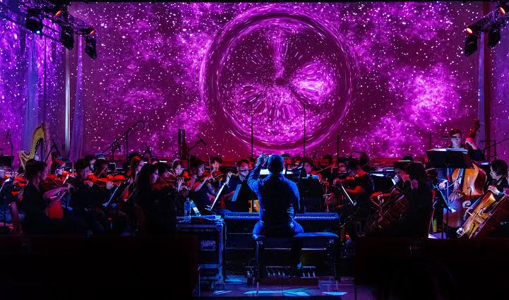

Pasiruošimas koncertams
Apie koncertus
Koncertai – tai ypatinga proga parodyti savo muzikinius gebėjimus, pasidalinti muzika su kitais ir patirti daug gerų emocijų. Tačiau prieš kiekvieną koncertą reikia tinkamai pasiruošti.

Kaip pasiruošti koncertui?
- Reguliariai repetuoti savo kūrinius.
- Išmokti muzikos kūrinius mintinai.
- Pasitikrinti, ar visi instrumentai yra paruošti.
- Pasirinkti tinkamą aprangą.
- Atvykti į koncertą anksčiau.
Kodėl svarbu repetuoti?
Repeticijos padeda jaustis užtikrinčiau, išvengti klaidų ir geriau atlikti muzikos kūrinius. Kuo daugiau praktikuojamasi, tuo lengviau įveikti jaudulį prieš pasirodymą.
Koncerto diena
Koncerto dieną stengiuosi išlikti rami, susikaupti ir mėgautis muzika. Svarbiausia – gerai praleisti laiką, parodyti savo pastangas ir pasidžiaugti pasirodymu.
